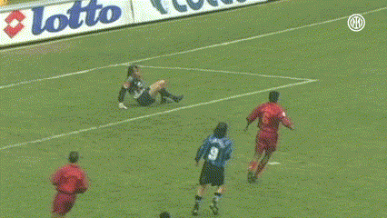

Paolo Michele Bruzzo nasce a Genova domenica 5 gennaio 1997.
Come a suo padre (dorianissimo) piace ricordare, lo stesso giorno di Udinese-Sampdoria 4-5, o come a Paolo piace sottolineare, lo stesso giorno dell'acrobatico gol in semi-rovesciata del mitico
Youri Djorkaeff in Inter-Roma... una robetta da nulla.

Credits to FC Internazionale Milano